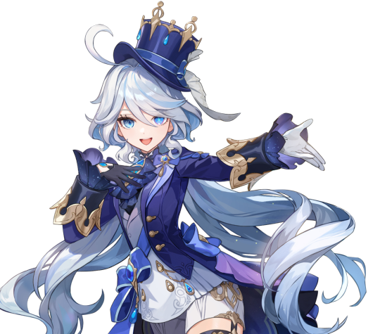

Furina adalah Hydro Archon dari Fontaine, bangsa yang dikenal
sebagai Nation of Justice. Sebagai pemimpin negeri yang
berlandaskan hukum dan pengadilan, Furina berdiri sebagai simbol
keadilan sekaligus wajah dari budaya Fontaine yang penuh gaya dan
keanggunan. Kehadirannya bukan hanya sekadar figur pemimpin,
tetapi juga cerminan dari bagaimana masyarakat Fontaine melihat
hukum megah, dramatis, dan penuh sorotan publik.
Furina memiliki penampilan yang sangat menonjol dan ikonik. Rambut
panjang berwarna perak dengan gradasi biru di ujungnya menjadi
ciri khas yang membuatnya langsung dikenali. Mata berwarna biru
cerah menyerupai lautan menambah daya tarik visual yang kuat.
Busana Furina selalu memadukan elemen elegan dengan gaya teatrikal
khas Fontaine. Pakaian yang dikenakan didominasi warna biru,
putih, dan hitam dengan detail berlapis yang memberikan kesan
bangsawan modern. Aksesoris dan potongan kostum yang dramatis
membuat penampilannya seakan siap naik ke panggung kapan saja.
Setiap detail dari penampilannya menegaskan statusnya sebagai
sosok yang karismatik dan penuh simbolisme.
Kepribadian Furina dikenal ekspresif dan teatrikal. Cara berbicara
sering penuh intonasi dramatis, disertai dengan gestur tangan yang
besar, seolah-olah setiap percakapan adalah bagian dari sebuah
pementasan. Gaya komunikasinya menjadikannya pusat perhatian di
mana pun berada. Di balik gaya teatrikal tersebut, Furina memiliki
karisma yang kuat. Rakyat Fontaine melihatnya sebagai pemimpin
yang mampu memikat publik melalui kepercayaan diri dan daya tarik
unik. Selain sisi glamornya, Furina juga sering memperlihatkan
humor dan kejenakaan, menghadirkan nuansa segar bahkan dalam momen
serius. Kombinasi antara kecerdasan, humor, dan gaya flamboyan
membuatnya menjadi figur yang sulit ditebak. Kadang serius, kadang
jenaka, tetapi selalu menarik perhatian.
Sebagai Hydro Archon, Furina memiliki peran utama dalam menjaga
hukum dan sistem peradilan yang menjadi dasar kehidupan di
Fontaine. Status sebagai Archon menjadikannya tidak hanya pemimpin
politik, tetapi juga simbol keadilan di mata rakyat. Julukan
Fontaine sebagai Nation of Justice sangat erat dengan sosok
Furina. Setiap kemunculan di pengadilan atau acara publik
diperlakukan seperti sebuah pertunjukan besar, dan Furina
memainkan perannya dengan penuh kesadaran akan sorotan masyarakat.
Posisi ini menegaskan bahwa dirinya adalah lebih dari sekadar
pemimpin, Furina adalah representasi langsung dari ideologi hukum
Fontaine.
Furina mencerminkan karakter bangsa Fontaine yang menjunjung
tinggi hukum dengan sentuhan dramatis. Persona teatrikal yang
ditunjukkan sejalan dengan budaya masyarakat Fontaine yang gemar
mengedepankan formalitas, elegansi, dan pertunjukan di ruang
publik. Kehadirannya sebagai Archon bukan hanya tentang kekuasaan,
tetapi juga tentang citra. Furina membawa kombinasi unik antara
keanggunan, drama, humor, dan wibawa, menjadikannya salah satu
Archon paling berkesan di antara tujuh bangsa Teyvat.